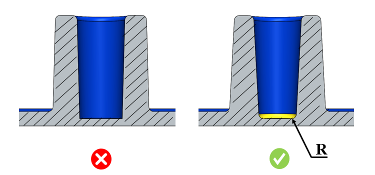

ボス内のコア穴底部の半径は、ユーザーが指定した値以上である必要があります。
ボス内のコア穴底部に半径を設けることで、応力集中を低減し、樹脂の流動性を向上させます。
一般的なガイドラインとして、半径を追加することで鋭角なコーナーを回避でき、応力集中の発生を防ぐことが推奨されます。
DFMPro は、コア穴を持つボス形状を識別し、コア穴底部の半径をチェックします。
ユーザーは、デフォルトで構成されている値を編集できます。

ここでは、
R = コア穴底部の半径